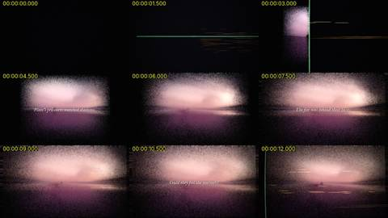
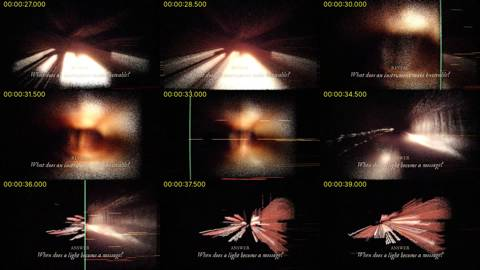
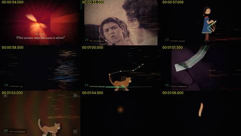
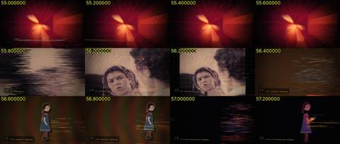
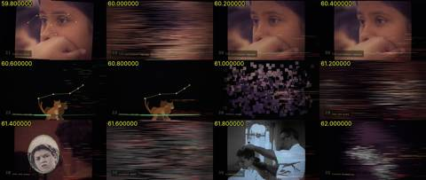
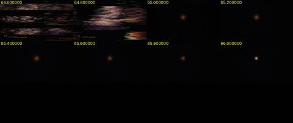
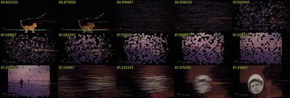
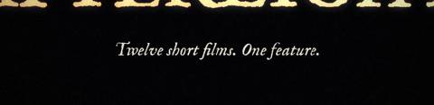

Critic · 2026-10-28 23:54 UTC · looked at 16 images
Critic on Afterlight cut 3
PASS 3REPAIR 4
The prompt it was given
You are an independent critic. Watch the 77-second trailer at /home/claude/afterlight/trailer3/afterlight-trailer-3.mp4 before reading any other file in that folder; do not read code or notes.
How to watch:
-
Pull frames with ffmpeg (
ffmpeg -ss T -i FILE -frames:v 1 -vf scale=960:-1 out.jpg) and view them with the Read tool. - Sample every 1.5 s across the whole trailer.
- Sample every 0.2 s through 55–66 s, a rapid montage of 24 cuts.
- You can't hear the sound, so judge it from data: extract the audio, look at the loudness envelope (ebur128) and a spectrogram image, and check that the audio's big events (the drop, the build, the silence) line up with picture events.
- Put your working files in /tmp/claude-0/c6/.
The director's brief:
- "haunting, give goose bumps, hope and heat"
- a warm, cosmic, archival plunderphonic feel in the spirit of The Avalanches
- light-speed horizontal spectrogram streaks that decode archival images
- older images left as infrared heat
- a final avalanche showing 24 animation techniques ("swarms") that have no film yet
- one ember that becomes the title
Report, in under 600 words:
- What you understood from the images alone.
-
PASS, REPAIR or INCONCLUSIVE on each of these, with evidence:
- (a) haunting, warm and hopeful in mood;
- (b) the scanline/streak decoding reads as an idea, not as noise;
- (c) the 24-swarm avalanche: name which cuts read as their technique and which read as mush or broken;
- (d) text legible on a phone;
- (e) the build, drop and silence structure, from the audio envelope.
- The 3–5 most important repairs, with timestamps.
- The strongest moments.
















What it reported
AFTERLIGHT trailer 3: critic's report (77.25 s, 1280x720, 24 fps)
I sampled frames every 1.5 s, every 0.2 s from 55 to 66 s, and every frame through the ambiguous cuts. Working files are in /tmp/claude-0/c6/ (contact sheets sheet15_*.jpg, m02_*.jpg, fine61.jpg, fine63.jpg; spec.png; env.txt).
1. What the images alone say
- Cold open (0–13 s): a green vertical scan bar with orange horizontal streaks writes a pink, foggy light-field into existence. Plato captions run over it, ending on "Could they feel the warmth?"
- Chapters (13–55 s): five chapters, each a small-caps word plus a question: BORROW (a bright tube), FOCUS (a horizon sun), REVEAL (a headlight tunnel), ANSWER (a red starburst), EMBODY (a face and hand in orange heat), REMAIN (a red room with a radiant source).
- Montage (55.8–64.9 s): a numbered catalogue of animation techniques laid over archival stills and a paper puppet girl.
- Ending: one ember at 65.0 stretches into a stroke and assembles AFTERLIGHT at about 67.5. Then "Twelve short films. One feature." and the credits, and the title scatters to red dust at 75.
2. Verdicts
- (a) Mood — PASS. The palette is consistently warm (amber, rose, ember red). The Plato line and "Could they feel the warmth?" set up a haunting register, and the REMAIN room and the EMBODY face read as heat left behind. Hope arrives with the ember-to-title.
-
(b) Streak decoding — PASS at the open, REPAIR afterwards.
- At 1.5–3.0 s the scan bar visibly reveals an image, so the idea lands.
- From then on, the green bar and streaks (12, 22.5, 30, 33, 36, 40.5, 43.5 s) sit on top of images that are already decoded. They read as overlay glitch.
- In the montage each 0.4 s cut opens with about 0.1–0.15 s of smear that resolves into the image, which reads as decoding. But roughly a third of the montage is smear.
-
(c) The 24 swarms — REPAIR.
- Read as their technique: 10 MLS deformation, 13 secondary motion, 19 smart bones, 20 production rig, 21 photo to actor, 23 skeletal runtime, 26 archive stage (tiles assembling into the runner), 28 mask and plate, 30 prompted masks, 32 forward kinematics, 34 as-rigid-as-possible (the clearest), 35 gesture warp, 37 weighted skinning, 42 few-shot structure.
- Weak: 11 video puppetry tabletop (a static girl, no technique shown), 12 deformation weights, 15 layered puppet (reads as posterize), 22 live performance capture (a still face plus a faint line), 48 characters that can refuse (depends on tiny text).
-
Mush or broken:
- 36 bounded biharmonic weights: grey blobs on an RGB field, looks like a glitch.
- 40 paper performance: the cat resolves for about 2 frames (63.75–63.83) and repeats cut 23.
- 44 multiplane parallax: dark purple slabs with no visible depth.
- 49 open-content reservoir: resolves to a thumbnail grid for 1–2 frames (64.75).
- 51 montage research: a single collage frame (64.92), then the ember.
- Source reuse: about 8 images carry 24 cuts. The puppet girl appears 5 times; the cat, mirror girl, barbershop and runner twice each. It reads as one rig repeated, not 24 films.
-
(d) Phone legibility — REPAIR.
- The montage labels have an x-height of about 8 px at 720p, roughly 2.5 pt on a phone: unreadable. The same goes for the credits footer ("Archive footage from movingimagearchive.com…").
- The chapter questions are marginal, and they wash out on bright plates: 24–25.5, 27–28.5 and 40.5–46.5 s.
- The title and tagline are fine.
-
(e) Audio structure — PASS on the drop and silence, REPAIR on the build. Integrated loudness is −16.8 LUFS.
- Riser and drop: a broadband noise riser runs 18.6–19.5 s. The drop at 19.60 s (−23 to −8 dBFS RMS) lands on the FOCUS cut.
- Silence: 65.10–66.40 s at −44 dBFS, which matches the ember appearing at 65.0. Sound returns at 66.45 as the ember stretches. A warm pad sits under the title, then a fade to −48 LUFS by 77 s.
- Build: short-term loudness sits flat at −15 to −17 LUFS from 20 s to 65 s, and the montage is only about 1 LU louder. A sine glide (≈250→600 Hz, 59–65.5 s) and added hiss are present but barely register. There is a dip before the montage (55.55–55.75 s, −31 dBFS) but no audio onset per cut; only about 5 onsets fall across 24 cuts.
3. Top repairs
- 55.8–64.9 s: give each swarm about 0.6 s with at most 0.08 s of smear. Cut or replace 36, 40, 44, 49 and 51, or hold 49 and 51 long enough to read. Spread the cuts across more distinct archival sources.
- Montage labels and credits footer: at least triple the size (target ≥24 px at 720p) or drop the labels. The technique names currently carry the concept and nobody can read them.
- 55–65 s: make it an actual build. Bring the riser up, rise 4–6 LU into 65.0, and put a transient on each cut so the avalanche is audible.
- 24–28.5 s and 40–46.5 s: darken or scrim behind the chapter questions.
- 12–44 s: cut the recurring scan-bar overlays, or have each one actually reveal its plate as at 1.5–3 s.
4. Strongest moments
- 1.5–4.5 s: the scan bar writes the first image. This is the clearest statement of the concept.
- 19.6 s: the drop lands on the FOCUS sun.
- 48–55 s: the REMAIN red room, the best "infrared heat" image.
- 62.4–62.6 s: the ARAP mesh over the beach runner, and 64.0 s: the few-shot stick-figure diagram.
- 65.0–67.5 s: silence, the single ember, then AFTERLIGHT. This is the goose-bump beat and it works.